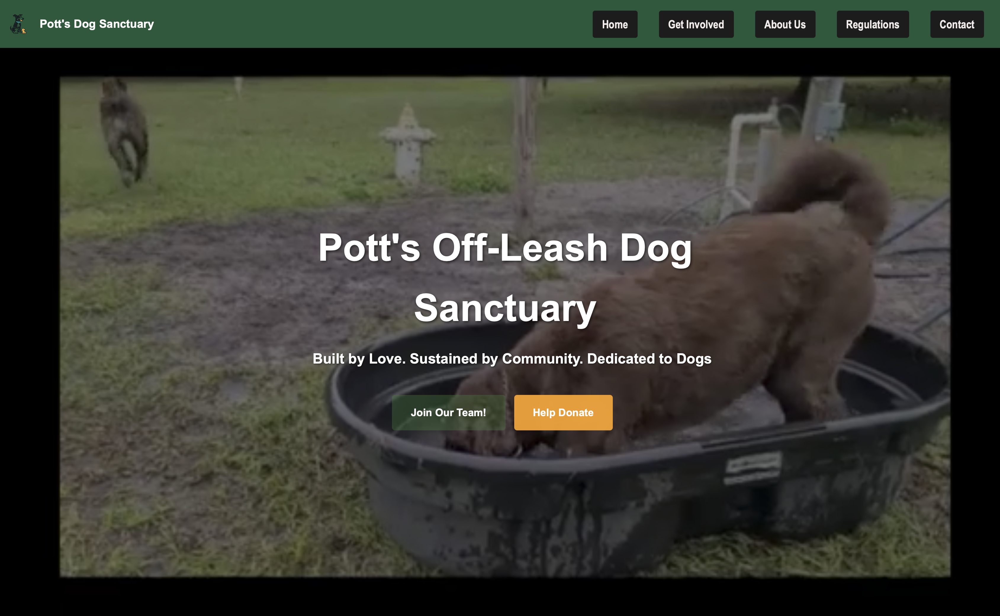
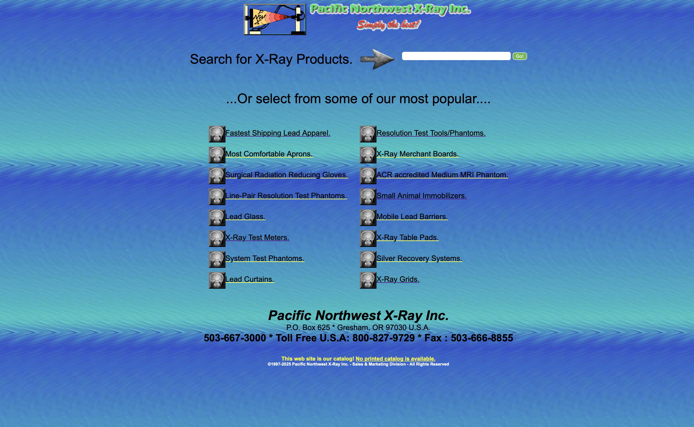
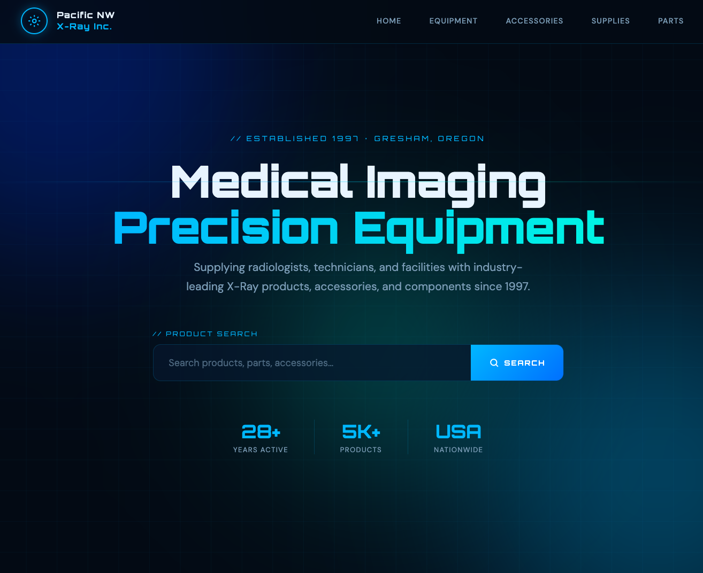

Web Design & UI Layouts
I create clean, responsive page structures with strong hierarchy, intuitive spacing, and visual rhythm that gives each section a purpose.
I am a web designer, front-end builder, and I optimize SEO for websites based in Lakeland, Florida.
I combine clean code, graphic design instincts, and marketing awareness to create portfolio sites, business websites, and branded digital experiences that feel polished without feeling generic.
Modern layouts, clear hierarchy, and confident visual storytelling.
Playful color, motion, and imagery that still stay client-ready.
My work sits at the overlap of web design, development, content, and branding. That makes it easier to create websites that do more than just look good.
I create clean, responsive page structures with strong hierarchy, intuitive spacing, and visual rhythm that gives each section a purpose.
I turn ideas into working builds with HTML, CSS, and JavaScript, focusing on usability, responsiveness, and thoughtful interactions.
From mockups to graphics and content framing, I help projects feel cohesive so the final site has a stronger identity.
Creative lanes combined: web design, development, and graphics.
Portfolio pieces across websites, JavaScript projects, and visual design work.
Goal for every project: make the work feel memorable and easy to use.
Click image previews to enlarge.

A client-style website concept built to communicate services clearly while keeping the visual mood warm, welcoming, and easy to navigate.


A before-and-after redesign that shows my approach to modernizing outdated interfaces through structure, contrast, and clearer user flow.


Small but practical projects that show logic, DOM work, and interactive thinking through focused front-end exercises.
View Logic ProjectsI start with the message, audience, and practical purpose of the page so the design has direction from the start.
Color, typography, spacing, and image treatment all work together so the site feels distinct and consistent.
I focus on clean responsive code, clear interaction patterns, and layouts that hold up across devices.
I’m available for freelance builds, redesigns, and collaborative creative work.